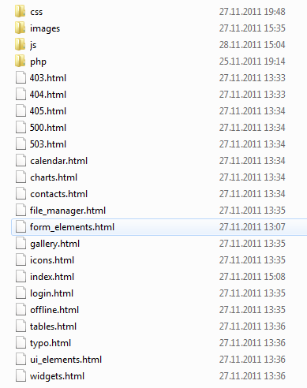

First of all i want to thank you for purchasing my theme. If you have any questions that are beyond the scope of this help file, please feel free to email via my user page contact form here. Thanks so much!
In downloaded package you'll find "HTML" folder, which contains main theme files: HTML files, Jquery plugins and libraries, images, PHP files, CSS files:

All php, js and css files are in proper folders without sorting. Images are separated and could be found in a proper folder:
In total there are 19 main theme .html files:
All these html files have certain html blocks in their source code. All the html blocks are clearly commented out and should be easy to spot. Each HTML file contains left navigation sidebar. The main structure of a typical page would be:
Content area coubd be in 2 versions - full width area and with widgets. For these pages structure (inside of CONTENT area) would be:
All HTML files are using 1 design style for blocks, headers and buttons. But for main page background there are 5 different backgrounds.
To change the background you need to change image and path to it inside main.css file in body tag:
body { margin: 0; padding: 0; background: url(../images/bodyBg.jpg) repeat; font-size: 12px; color: #424242; font-family: Arial, Helvetica, sans-serif; line-height: 20px; min-height: 100%; position: relative; }
All pattern backgrounds are placed in /images/patterns/ folder.
There are 3 .php files included to the package:
In upload.php file you can set folder for uploaded files. All PHP files are well commented so just follow those tips to setup theme features for your needs.
<?php
// Include connector
include_once dirname(__FILE__).DIRECTORY_SEPARATOR.'elFinder.class.php';
$opts = array(
'root' => '/var/www/localhost/elfinder/files',
'URL' => 'http://localhost/elfinder/files',
'lang' => 'ru',
'debug' => false,
'arc' => '7za',
'fileURL' => false,
'imgLib' => 'mogrify',
'dotFiles' => true,
'dirSize' => true,
'uploadAllow' => array('image/png'),
'uploadDeny' => array('image', 'text'),
'uploadOrder' => 'deny,allow',
'disabled' => array('edit', 'rename'),
'tmbDir' => '_tmb',
'defaults' => array(
'read' => true,
'write' => true,
'rm' => true
),
);
$fm = new elFinder($opts);
$fm->run();
?>
| root | String | Path to root directory. Required parameter |
| URL | String | URL of root directory. Required parameter |
| rootAlias | String | Alias for root directory |
| disabled | Array | List of disabled commands |
| dotFiles | Boolean | Show dot files. Default: true |
| dirSize | Boolean | Calculate directory sizes |
| fileMode | Octal | mode for new files |
| dirMode | Octal | mode for new directories |
| mimeDetect | String | MIME-type detection method (possible values: finfo, php, linux (file -ib), bsd (file -Ib), internal (based on file extensions)) |
| uploadAllow | Array | List of mime-types allowed to upload. Can be set exactly image/jpeg or to group application |
| uploadDeny | Array | List of mime-types disallowed to upload |
| uploadOrder | String | Order of upload rules execution. allow,deny only what is allowed, except what is disallowed (AND). deny,allow what is not disallowed or allowed (OR) |
| imgLib | String | Library for thumbnail creation (possible values: imagick, mogrify, gd). If not set will try detect automatically |
| tmbDir | String | Thumbnail direcroty. If not set thumbnails will be disabled |
| tmbCleanProb | Integer | How often to clean thumbnails. Possible values: from 0 to 200. 0 - never, 200 - on each client init request |
| tmbAtOnce | Integer | How many thumbnails to create per background request. Default: 5 |
| tmbSize | Integer | Thumbnail size in pixels |
| fileURL | Boolean | Show real URLs to files in client. Default: true |
| dateFormat | String | Time format. Default: j M Y H:i |
| logger | Object | Object-logger |
| defaults | Array | Default access for files/directories. Default: array( 'read' => true, 'write' => true, 'rm' => true ) |
| perms | Array | Permission for files/directories. More information on this page |
| archiveMimes | Array | List of file archives allowed to create. If not set will allow all detected archvies |
| archivers | Array | Information about archivers. If not set will try detect all available |
| debug | Boolean | Send debug information to client |
In total there are 9 css files:
main.css file imports all alternative stylesheets, so you don't need to include all .css files in each HTML page, simply add/remove necessary line in main.css (first lines):
@import "reset.css";
@import "dataTable.css";
@import "ui_custom.css";
@import "fullcalendar.css";
@import "icons.css";
@import "elfinder.css";
@import "wysiwyg.css";
and inside HTML page include only one main file:
I used "Cuprum" font from Google Font Library for headings. In each HTML page inside <head> tag inserted 1 line of code, which loads this font from Google library:
Inside of main.css file on line #16 you can find list of classes, which are using this font:
h1, h2, h3, h4, h5, h6, ul.tabs li a, .leftNav ul li a, .stats ul li span, .userLink, .errorPage p, .ui-dialog .ui-dialog-title { font-family: 'Cuprum', sans-serif; font-weight: normal; }
All CSS files are well commented, so you can easily find and edit any class in any CSS file.
In total there are 38 JS files:
And 1 .js file (minified Jquery UI library) loads from external resource:
In general each HTML page loads all these 39 .js files. In your project you can minify all these files into 1 or do anything you want, but in download package i included all files so you can easily edit/remove/add new files.
Each JS file is in proper folder: all files, which are used for forms are placed in /forms/ folder, the same path is in HTML page:
Note: it's important to use this order of files, because some of plugins contain modified Jquery UI code and other features. Better choice is to use custom.js file below others, because it contains loaders for all these plugins.
All JS files are well commented, so you can easily find and edit any code in any JS file.
List of Jquery plugins which were used in It's Brain theme, with details:
This plug-in allows you to "transfer" the <option> elements between the <select>s in two distinct ways:
The following table has a listing of all the possible option settings, their default values, their valid values, and a brief description of each.
| Parameter | Default Value | Values | Description |
|---|---|---|---|
| box1View | 'box1View' | Any valid HTML id string. | The id attribute of the first visible <select> element. |
| box1Storage | 'box1Storage' | Any valid HTML id string. | The id attribute of the first hidden <select> element. (See section Document Structure for an explanation of visible/hidden <select> elements.) |
| box1Filter | 'box1Filter' | Any valid HTML id string. | The id attribute of the textbox used to filter the first<select> element. |
| box1Clear | 'box1Clear' | Any valid HTML id string. | The id attribute of the element used to clear the filter for the first <select> element. This is typically a button, but can technically be any element. |
| box1Counter | 'box1Counter' | Any valid HTML id string. | The id attribute of the element used to display counts of visible/total <option>s in the first <select>element. (used when filtering). |
| box2View | 'box2View' | Any valid HTML id string. | The id attribute of the second visible <select>element. |
| box2Storage | 'box2Storage' | Any valid HTML id string. | The id attribute of the second hidden <select>element. |
| box2Filter | 'box2Filter' | Any valid HTML id string. | The id attribute of the textbox used to filter the second<select> element. |
| box2Clear | 'box2Clear' | Any valid HTML id string. | The id attribute of the element used to clear the filter for the second <select> element. This is typically a button, but can technically be any element. |
| box2Counter | 'box2Counter' | Any valid HTML id string. | The id attribute of the element used to display counts of visible/total <option>s in the second <select>element. (used when filtering). |
| to1 | 'to1' | Any valid HTML id string. | The id attribute of the element used to transfer only selected <option>s from the second <select> to the first. |
| to2 | 'to2' | Any valid HTML id string. | The id attribute of the element used to transfer only selected <option>s from the first <select> to the second. |
| allTo1 | 'allTo1' | Any valid HTML id string. | The id attribute of the element used to transfer ALL<option>s from the second <select> to the first. |
| allTo2 | 'allTo2' | Any valid HTML id string. | The id attribute of the element used to transfer ALL<option>s from the first <select> to the second. |
| transferMode | 'move' | 'move','copy' | The type of transfer to perform on moved items. See section Transfer Modes for a full description of each. |
| sortBy | 'text' | 'text','value' | The value to sort <option> elements by. 'text' causes them to sort alphanumerically (ascending) by the visible text of the option. 'value' causes them to sort alphanumerically (ascending) by their 'value' attribute. |
| useFilters | true | true,false | True to enable filtering, false to disable it. If this setting is false, it is recommended that useCounters also be set to false, as the counters will not serve a purpose. |
| useCounters | true | true,false | True to enable counters, false to disable them. |
| useSorting | true | true,false | Sorting enforces a consistent sort order on the<option> elements, regardless of what order they are transferred in. Set this to false if you do not want them to (or do not care if they) maintain a consistent order. |
| selectOnSubmit | true | true,false | In order for options in box 2 to be recieved by POST, they must be selected before the form is submitted. Since this is most often the desired behavior, it is enabled by default. Set this option to false to disable. |
Note: Original documentation for this plugin you can find on official plugin's website: http://www.meadmiracle.com/dlb/DLBDocumentation.aspx
A jQuery plugin that sets an input field up to pick a time value using a spinner.
Defaults:
$(selector).timeEntry({
show24Hours: false, // True to use 24 hour time, false for 12 hour (AM/PM)
separator: ':', // The separator between time fields
ampmPrefix: '', // The separator before the AM/PM text
ampmNames: ['AM', 'PM'], // Names of morning/evening markers
// The popup texts for the spinner image areas
spinnerTexts: ['Now', 'Previous field', 'Next field', 'Increment', 'Decrement'],
appendText: '', // Display text following the input box, e.g. showing the format
showSeconds: false, // True to show seconds as well, false for hours/minutes only
timeSteps: [1, 1, 1], // Steps for each of hours/minutes/seconds when incrementing/decrementing
initialField: 0, // The field to highlight initially, 0 = hours, 1 = minutes, ...
useMouseWheel: true, // True to use mouse wheel for increment/decrement if possible,
// false to never use it
defaultTime: null, // The time to use if none has been set, leave at null for now
minTime: null, // The earliest selectable time, or null for no limit
maxTime: null, // The latest selectable time, or null for no limit
spinnerImage: 'spinnerDefault.png', // The URL of the images to use for the time spinner
// Seven images packed horizontally for normal, each button pressed, and disabled
spinnerSize: [20, 20, 8], // The width and height of the spinner image,
// and size of centre button for current time
spinnerBigImage: '', // The URL of the images to use for the expanded time spinner
// Seven images packed horizontally for normal, each button pressed, and disabled
spinnerBigSize: [40, 40, 16], // The width and height of the expanded spinner image,
// and size of centre button for current time
spinnerIncDecOnly: false, // True for increment/decrement buttons only, false for all
spinnerRepeat: [500, 250], // Initial and subsequent waits in milliseconds
// for repeats on the spinner buttons
beforeShow: null, // Function that takes an input field and
// returns a set of custom settings for the time entry
beforeSetTime: null // Function that runs before updating the time,
// takes the old and new times, and minimum and maximum times as parameters,
// and returns an adjusted time if necessary
});
$.timeEntry.setDefaults(settings) // Set default values for all instances
$(selector).timeEntry('change', settings) // Change the settings for selected instances
$(selector).timeEntry('change', name, value) // Change a single setting for selected instances
$(selector).timeEntry('destroy') // Remove the time entry functionality
$(selector).timeEntry('disable') // Disable time entry
$(selector).timeEntry('enable') // Enable time entry
$(selector).timeEntry('isDisabled') // Determine if field is disabled
$(selector).timeEntry('setTime', time) // Set the time for the instance
$(selector).timeEntry('getTime') // Retrieve the currently selected time
$(selector).timeEntry('getOffset') // Retrieve the current time offset
Note: Original documentation for this plugin you can find on official plugin's website: http://keith-wood.name/timeEntry.html
Smart Wizard is a flexible jQuery plug-in for wizard like interface. It allows to group contents into sections and so it saves page space and also gives a neat and stylish interface for users. Using Smart Wizard 2.0 you can easily do input validation and so it is good for user registration and kind of tasks. Please see the demos and documentation for more details.
$('.wizard').smartWizard(
{
// Properties
selected: 0, // Selected Step, 0 = first step
keyNavigation: true, // Enable/Disable key navigation(left and right keys are used if enabled)
enableAllSteps: false, // Enable/Disable all steps on first load
transitionEffect: 'fade', // Effect on navigation, none/fade/slide/slideleft
contentURL:null, // specifying content url enables ajax content loading
contentCache:true, // cache step contents, if false content is fetched always from ajax url
cycleSteps: false, // cycle step navigation
enableFinishButton: false, // makes finish button enabled always
errorSteps:[], // array of step numbers to highlighting as error steps
labelNext:'Next', // label for Next button
labelPrevious:'Previous', // label for Previous button
labelFinish:'Finish', // label for Finish button
// Events
onLeaveStep: null, // triggers when leaving a step
onShowStep: null, // triggers when showing a step
onFinish: null // triggers when Finish button is clicked
}
);
| selected | specify the selected step | integer | 0 |
| keyNavigation | enable/disable key navigation. left/right keys are used if enabled |
true = enabled false= disabled |
true |
| enableAllSteps | Enable/Disable all steps on first load | true = enabled false= disabled |
false |
| transitionEffect | Animation effect on step navigation | none/fade/slide/slideleft | fade |
| contentURL | Setting this property will enable ajax content loading, setting null will disable ajax contents | null or a valid url | null |
| contentCache | This property will enable caching of the content on ajax content mode. So the contents are fetched from the url only on first load of the step | true = enabled false= disabled |
true |
| cycleSteps | This property allows to cycle the navigation of steps | true = enabled false= disabled |
false |
| enableFinishButton | This property will make the finish button enabled always | true = enabled false= disabled |
false |
| errorSteps | an array of step numbers to highlighting as error steps | array of integers ex: [2,4] |
[] |
| labelNext | Label for Next button | String | Next |
| labelPrevious | Label for Previous button | String | Previous |
| labelFinish | Label for Finish button | String | Finish |
Note: Original documentation for this plugin you can find on official plugin's website: http://techlaboratory.net/products.php?product=smartwizard&action=2
Attach the Javascript and CSS files to your document. Edit CSS file and fix the paths to images and change colors to fit your site theme.
<link rel="stylesheet" media="screen" type="text/css" href="css/colorpicker.css" /> <script type="text/javascript" src="js/colorpicker.js"></script>
All you have to do is to select the elements in a jQuery way and call the plugin.
$('#colorpickerField').ColorPicker(options);
A hash of parameters. All parameters are optional.
| eventName | string | The desired event to trigger the colorpicker. Default: 'click' |
| color | string or hash | The default color. String for hex color or hash for RGB and HSB ({r:255, r:0, b:0}) . Default: 'ff0000' |
| flat | boolean | Whatever if the color picker is appended to the element or triggered by an event. Default false |
| livePreview | boolean | Whatever if the color values are filled in the fields while changing values on selector or a field. If false it may improve speed. Default true |
| onShow | function | Callback function triggered when the color picker is shown |
| onBeforeShow | function | Callback function triggered before the color picker is shown |
| onHide | function | Callback function triggered when the color picker is hidden |
| onChange | function | Callback function triggered when the color is changed |
| onSubmit | function | Callback function triggered when the color it is chosen |
If you want to set a new color.
$('#colorpickerField').ColorPickerSetColor(color);
The 'color' argument is the same format as the option color, string for hex color or hash for RGB and HSB ({r:255, r:0, b:0}).
Note: Original documentation for this plugin you can find on official plugin's website: http://www.eyecon.ro/colorpicker/#about
colResizable is a jQuery plugin designed to enhance any kind of HTML table object adding column resizing features by dragging column anchors manually. It is tiny in size (colResizable v1.0 is only 2.8kb) and it doesn´t require any other library dependencies such as jQuery-UI or others. It is fully compatible with all major browsers(IE7+, Firefox, Chrome and Opera), and works perfectly with both percentage and pixel-based table layouts.
colResizable was developed since no other similar plugin with the below listed features was found:
colResizable provides some customization attributes in order to modify its appearance and the way it works:
Note: Original documentation for this plugin you can find on official plugin's website: http://quocity.com/colresizable/
DataTables operates on the principle of progressive enhancement, whereby an enhanced and interactive table will be presented to the end user if their browser has the required capabilities. When you initialise the jQuery.dataTable object, information about the table is read directly from the HTML page. In combination with the default values for the features in DataTables, this makes it very easy to integrate directly into your web-site or web-application. Optionally, you can use the initialisation parameters to load data from locations other than the DOM, such as a server-side processing script or an Ajax obtained JSON file.
By default the majority of features that DataTables provides are enabled, such that a richly interactive table is presented to end users. However, you may wish to disable various features to customise DataTables to your specific application. This is possible using the following initialisation parameters.
| bAutoWidth |
Enable or disable automatic column width calculation. This can be disabled as an optimisation (it takes some time to calculate the widths) if the tables widths are passed in using aoColumns. |
| bDeferRender |
Deferred rendering can provide DataTables with a huge speed boost when you are using an Ajax or JS data source for the table. This option, when set to true, will cause DataTables to defer the creation of the table elements for each row until they are needed for a draw - saving a significant amount of time. |
| bFilter |
Enable or disable filtering of data. Filtering in DataTables is "smart" in that it allows the end user to input multiple words (space separated) and will match a row containing those words, even if not in the order that was specified (this allow matching across multiple columns). Note that if you wish to use filtering in DataTables this must remain 'true' - to remove the default filtering input box and retain filtering abilities, please use sDom. |
| bInfo |
Enable or disable the table information display. This shows information about the data that is currently visible on the page, including information about filtered data if that action is being performed. |
| bJQueryUI |
Enable jQuery UI ThemeRoller support (required as ThemeRoller requires some slightly different and additional mark-up from what DataTables has traditionally used). |
| bLengthChange |
Allows the end user to select the size of a formatted page from a select menu (sizes are 10, 25, 50 and 100). Requires pagination (bPaginate). |
| bPaginate |
Enable or disable pagination. |
| bProcessing |
Enable or disable the display of a 'processing' indicator when the table is being processed (e.g. a sort). This is particularly useful for tables with large amounts of data where it can take a noticeable amount of time to sort the entries. |
| bScrollInfinite |
Enable infinite scrolling for DataTables (to be used in combination with sScrollY). Infinite scrolling means that DataTables will continually load data as a user scrolls through a table, which is very useful for large dataset. This cannot be used with pagination, which is automatically disabled. |
| bSort |
Enable or disable sorting of columns. Sorting of individual columns can be disabled by the "bSortable" option for each column. |
| bSortClasses |
Enable or disable the addition of the classes 'sorting_1', 'sorting_2' and 'sorting_3' to the columns which are currently being sorted on. This is presented as a feature switch as it can increase processing time (while classes are removed and added) so for large data sets you might want to turn this off. |
| bStateSave |
Enable or disable state saving. When enabled a cookie will be used to save table display information such as pagination information, display length, filtering and sorting. As such when the end user reloads the page the display display will match what thy had previously set up. |
| sScrollX |
Enable horizontal scrolling. When a table is too wide to fit into a certain layout, or you have a large number of columns in the table, you can enable x-scrolling to show the table in a viewport, which can be scrolled. This property can by any CSS unit, or a number (in which case it will be treated as a pixel measurement). |
| sScrollY |
Enable vertical scrolling. Vertical scrolling will constrain the DataTable to the given height, an enable scrolling for any data which overflows the current viewport. This can be used as an alternative to paging to display a lot of data in a small area (although paging and scrolling can both be enabled at the same time). This property can by any CSS unit, or a number (in which case it will be treated as a pixel measurement). |
Where the DataTables features can be considered rough grain tuning of your DataTables integration, there are many other parameters which will let you obtain the fine grain tuning you might need to make the integration truly seamless. Almost every function that DataTables provides can be fine tuned in some manner using the initialisation options shown below.
| aaData |
An array of data to use for the table, passed in at initialisation which will be used in preference to any data which is already in the DOM. This is particularly useful for constructing tables purely in Javascript, for example with a custom Ajax call. |
| aaSorting |
If sorting is enabled, then DataTables will perform a first pass sort on initialisation. You can define which column(s) the sort is performed upon, and the sorting direction, with this variable. The aaSorting array should contain an array for each column to be sorted initially containing the column's index and a direction string ('asc' or 'desc'). |
| aaSortingFixed | This parameter is basically identical to the aaSorting parameter, but cannot be overridden by user interaction with the table. What this means is that you could have a column (visible or hidden) which the sorting will always be forced on first - any sorting after that (from the user) will then be performed as required. This can be useful for grouping rows together. |
| aLengthMenu |
This parameter allows you to readily specify the entries in the length drop down menu that DataTables shows when pagination is enabled. It can be either a 1D array of options which will be used for both the displayed option and the value, or a 2D array which will use the array in the first position as the value, and the array in the second position as the displayed options (useful for language strings such as 'All'). |
| aoSearchCols |
Basically the same as oSearch, this parameter defines the individual column filtering state at initialisation time. The array must be of the same size as the number of columns, and each element be an object with the parameters "sSearch" and "bEscapeRegex" (the latter is optional). 'null' is also accepted and the default will be used. |
| asStripClasses |
An array of CSS classes that should be applied to displayed rows. This array may be of any length, and DataTables will apply each class sequentially, looping when required. |
| bDestroy |
Replace a DataTable which matches the given selector and replace it with one which has the properties of the new initialisation object passed. If no table matches the selector, then the new DataTable will be constructed as per normal. |
| bRetrieve |
Retrieve the DataTables object for the given selector. Note that if the table has already been initialised, this parameter will cause DataTables to simply return the object that has already been set up - it will not take account of any changes you might have made to the initialisation object passed to DataTables (setting this parameter to true is an acknowledgement that you understand this). bDestroy can be used to reinitialise a table if you need. |
| bScrollCollapse | When vertical (y) scrolling is enabled, DataTables will force the height of the table's viewport to the given height at all times (useful for layout). However, this can look odd when filtering data down to a small data set, and the footer is left "floating" further down. This parameter (when enabled) will cause DataTables to collapse the table's viewport down when the result set will fit within the given Y height. |
| bSortCellsTop |
Allows control over whether DataTables should use the top (true) unique cell that is found for a single column, or the bottom (false - default). This is useful when using complex headers. |
| iCookieDuration |
Duration of the cookie which is used for storing session information. This value is given in seconds. |
| iDeferLoading |
When enabled DataTables will not make a request to the server for the first page draw - rather it will use the data already on the page (no sorting etc will be applied to it), thus saving on an XHR at load time. iDeferLoading is used to indicate that deferred loading is required, but it is also used to tell DataTables how many records there are in the full table (allowing the information element and pagination to be displayed correctly). |
| iDisplayLength |
Number of rows to display on a single page when using pagination. If feature enabled (bLengthChange) then the end user will be able to over-ride this to a custom setting using a pop-up menu. |
| iDisplayStart |
Define the starting point for data display when using DataTables with pagination. Note that this parameter is the number of records, rather than the page number, so if you have 10 records per page and want to start on the third page, it should be "20". |
| iScrollLoadGap |
The scroll gap is the amount of scrolling that is left to go before DataTables will load the next 'page' of data automatically. You typically want a gap which is big enough that the scrolling will be smooth for the user, while not so large that it will load more data than need. |
| oSearch |
This parameter allows you to have define the global filtering state at initialisation time. As an object the "sSearch" parameter must be defined, but the "bRegex" and "bSmart" parameters are optional. When "bRegex" is true, the search string will be treated as a regular expression, when false (default) it will be treated as a straight string. When "bSmart" DataTables will use it's smart filtering methods (to word match at any point in the data), when false this will not be done. |
| sAjaxDataProp |
By default DataTables will look for the property 'aaData' when obtaining data from an Ajax source or for server-side processing - this parameter allows that property to be changed. You can use Javascript dotted object notation to get a data source for multiple levels of nesting. |
| sAjaxSource |
You can instruct DataTables to load data from an external source using this parameter (use aData if you want to pass data in you already have). Simply provide a url a JSON object can be obtained from. This object must include the parameter 'aaData' which is a 2D array with the source data. |
| sCookiePrefix |
This parameter can be used to override the default prefix that DataTables assigns to a cookie when state saving is enabled. |
| sDom | This initialisation variable allows you to specify exactly where in the DOM you want DataTables to inject the various controls it adds to the page (for example you might want the pagination controls at the top of the table). DIV elements (with or without a custom class) can also be added to aid styling. The follow syntax is used:
|
| sPaginationType |
DataTables features two different built-in pagination interaction methods ('two_button' or 'full_numbers') which present different page controls to the end user. Further methods can be added using the API (see below). |
| sScrollXInner | This property can be used to force a DataTable to use more width than it might otherwise do when x-scrolling is enabled. For example if you have a table which requires to be well spaced, this parameter is useful for "over-sizing" the table, and thus forcing scrolling. This property can by any CSS unit, or a number (in which case it will be treated as a pixel measurement). |
Note: Original documentation for this plugin you can find on official plugin's website: http://datatables.net/
elFinder is an open-source file manager for web, written in JavaScript using jQuery UI. As you can see its creation is inspired by simplicity and convenience of Finder program used in Mac OS X operating system.
The main goal of our file manager - is to make you work with remote files the same convenient, as on your computer.
You can select files the usual way as on your computer and then just drag them to desired folder to move.
If you prefer to use "hot keys" then you will not notice any difference using elFinder.
Furthermore elFinder can create and extract archives, and QuickLook function allows you to preview common types of files like images, flash, text, audio, video and even pdf.
It allows to create and edit any text files and resize images.
Flexible configuration options allows to control: access rights, upload files types, log user evens; so everything that need system administrator.
Connectors in different programming languages gives ability to easy integrate our product in your solutions.
Note: Original documentation for this plugin you can find on official plugin's website: http://elrte.org/elfinder/
Flot is a pure Javascript plotting library for jQuery. It produces graphical plots of arbitrary datasets on-the-fly client-side.
The focus is on simple usage (all settings are optional), attractive looks and interactive features like zooming and mouse tracking.
The plugin works with Internet Explorer 6+, Firefox 2.x+, Safari 3.0+, Opera 9.5+ and Konqueror 4.x+ with the HTML canvas tag (the excanvasJavascript emulation helper is used for IE < 9).
Just include the Javascript file after you've included jQuery. Generally, all browsers that support the HTML5 canvas tag are supported.
For support for Internet Explorer < 9, you can use Excanvas - a canvas emulator; this is used in the examples bundled with Flot. You just include the excanvas script like this:
<!--[if lte IE 8]><script language="javascript" type="text/javascript" src="excanvas.min.js"></script><![endif]-->If it's not working on your development IE 6.0, check that it has support for VML which Excanvas is relying on. It appears that some stripped down versions used for test environments on virtual machines lack the VML support.You can also try using Flashcanvas (see http://code.google.com/p/flashcanvas/), which uses Flash to do the emulation. Although Flash can be a bit slower to load than VML, if you've got a lot of points, the Flash version can be much faster overall. Flot contains some wrapper code for activating Excanvas which Flashcanvas is compatible with.
Create a placeholder div to put the graph in:
<div id="placeholder"></div>You need to set the width and height of this div, otherwise the plot library doesn't know how to scale the graph. You can do it inline like this:
<div id="placeholder" style="width:600px;height:300px"></div>You can also do it with an external stylesheet. Make sure that the placeholder isn't within something with a display:none CSS property - in that case, Flot has trouble measuring label dimensions which results in garbled looks and might have trouble measuring the placeholder dimensions which is fatal (it'll throw an exception).
$.plot($("#placeholder"), data, options);
Here, data is an array of data series and options is an object with settings if you want to customize the plot. Take a look at the examples for some ideas of what to put in or look at the reference in the file "API.txt". Here's a quick example that'll draw a line from (0, 0) to (1, 1):
$.plot($("#placeholder"), [ [[0, 0], [1, 1]] ], { yaxis: { max: 1 } });
The plot function immediately draws the chart and then returns a plot object with a couple of methods.
Please visit official website of Flot plugin for more detailed documentation
Note: Original documentation for this plugin you can find on official plugin's website: http://code.google.com/p/flot/
<script type="text/javascript">
$(document).ready(function(){
$("#your_input_field").autoGrow();
});
</script>
<textarea id="your_input_field" cols="40" rows="5"></textarea>
Note: Original documentation for this plugin you can find on official plugin's website: http://www.technoreply.com/autogrow-textarea-plugin-version-2-0/
Autotab is a jQuery plugin that provides auto-tabbing and filtering on text fields in a form. Once the maximum number of characters has been reached within a defined text fields, the focus is automatically set to the defined target of the element. Likewise, clearing out the text field’s content by pressing backspace eventually places the focus on the elements previous target. NOTE: I still have all of the feedback I have received when my site was running Drupal. When this script moves past 1.1b, I will do my best to incorporate many of the suggestions given.
Automatically assign tabbing rules to all selected elements.
<script type="text/javascript">
$(document).ready(function() {
$(':input').autotab_magic();
// OR
$('#area_code, #number1, #number2').autotab_magic();
});
</script>
Apply the specified filter to an element.
<script type="text/javascript">
$(document).ready(function() {
$('#area_code, #number1, #number2').autotab_filter('numeric');
$('#key1, #key2, #key3, #key4, #key5').autotab_filter('alpha');
});
</script>
Options:
Apply the key/value pairs to configure filter options to an element.
<script type="text/javascript">
$(document).ready(function() {
$('#area_code, #number1, #number2').autotab_filter({
format: 'alphanumeric',
uppercase: true
});
});
</script>
Settings:
Apply the key/value pairs to configure auto-tab and filter options to an element. Filtering settings are optional.
<script type="text/javascript">
$(document).ready(function() {
// This example achieves the same result as Step 3 under Basic Usage.
$('#area_code').autotab({ target: 'number1', format: 'numeric' });
$('#number1').autotab({ target: 'number2', format: 'numeric', previous: 'area_code' });
$('#number2').autotab({ previous: 'number1', format: 'numeric' });
});
</script>
Settings:
Note: Original documentation for this plugin you can find on official plugin's website: http://www.lousyllama.com/sandbox/jquery-autotab
Add javascript inclusion in the header section of your web page
//required
<script type="text/javascript" src="js/jquery.js"></script>
<script type="text/javascript" src="js/-this plugin-.js"></script>
Write your form
<form class="jqtransform">
<div class="rowElem">
<label for="name">Name: </label>
<input type="text" name="name" />
</div>
<div class="rowElem"><input type="submit" value="send" /><div>
</form>
Finally use the plugin
After it, select the forms and call the jqTransform plugin. See some examples:
<script type="text/javascript">
$(function() {
//find all form with class jqtransform and apply the plugin
$("form.jqtransform").jqTransform(); });
</script>
To customize your form just edit .css file.
Note: Original documentation for this plugin you can find on official plugin's website: http://www.dfc-e.com/metiers/multimedia/opensource/jqtransform/
When it comes to form validation, it’s hard to have a versatile solution that works with every form. Figuring out how to display errors is not a simple task. This is something I tried to remedy with this script. When an error needs to be displayed, the script creates a div and positions it in the top right corner of the input. This way you don’t have to worry about your HTML form structure. The rounded corner and shadow are done with CSS3 and degrade well in non compliant browsers. There is no images needed.
<script src="js/jquery.validationEngine-en.js" type="text/javascript" charset="utf-8"></script>
<script src="js/jquery.validationEngine.js" type="text/javascript" charset="utf-8"></script>
And finally link the desired theme:
<link rel="stylesheet" href="css/validationEngine.jquery.css" type="text/css"/>
<input value="someone@nowhere.com" class="validate[required,custom[email]]" type="text" name="email" id="email" />
<input value="2010-12-01" class="validate[required,custom[date]]" type="text" name="date" id="date" />
<input value="too many spaces obviously" class="validate[required,custom[onlyLetterNumber]]" type="text" name="special" id="special" />
Options are typically passed to the init action as a parameter.
$(“#formID1″).validationEngine({promptPosition : “centerRight”, scroll: false});
Initializes the engine with default settings
$("#formID1").validationEngine({promptPosition : "centerRight", scroll: false});
$("#formID1").validationEngine('init', {promptPosition : "centerRight", scroll: false});
<pre>
<h3>attach</h3>
Attaches jQuery.validationEngine to form.submit and field.blur events.
<pre lang="html">
$("#formID1").validationEngine('attach');
<pre/>
<h3>detach</h3>
Unregisters any bindings that may point to jQuery.validaitonEngine.
<pre lang="html">
$("#formID1").validationEngine('detach');
Validates the form and displays prompts accordingly. Returns *true* if the form validates, *false* if it contains errors. Note that if you use an ajax form validator, the actual result will be delivered asynchronously to the function *options.onAjaxFormComplete*.
alert( $("#formID1").validationEngine('validate') );
showPrompt (promptText, type, promptPosition, showArrow)
Displays a prompt on a given element. Note that the prompt can be displayed on any element an id.
The method takes four parameters:
1. the text of the prompt itself
2. a type which defines the visual look of the prompt: ‘pass’ (green), ‘load’ (black) anything else (red)
3. an optional position: either “topLeft”, “topRight”, “bottomLeft”, “centerRight”, “bottomRight”. Defaults to *”topRight”*
4. an optional boolean which tells if the prompt should display a directional arrow
<fieldset>
<legend id="legendid">Email</legend>
<a href="#" onclick="$('#legendid').validationEngine('showPrompt', 'This a custom msg', 'load')">Show prompt</a>
</fieldset>
Closes error prompts in the current form (in case you have more than one form on the page)
$('#formID1').validationEngine('hide')">Hide prompts
Closes **all** error prompts on the page.
$('#formID1').validationEngine('hideAll');
Please visit official plugin's website for full documentation.
Note: Original documentation for this plugin you can find on official plugin's website: http://www.position-absolute.com/articles/jquery-form-validator-because-form-validation-is-a-mess/
Spinner works with Mousewheel jquery plugin, developed by Brandon Aaron
ui.spinner.js includes modified version of Jquery UI Spinner feature so it's important to load these 2 files BEFORE loading UI library
Note: Visit an official plugin's website: http://www.yelotofu.com/2009/05/jquery-spinner-update/
This jQuery plugin aims to replace the basic functionality provided by the standard JavaScript alert(),confirm(), and prompt() functions. What’s the benefit of using custom methods? Well, a few good reasons, really.
These methods simulate a true modal dialog box. They will automatically reposition themselves if you resize the browser window (unlike many existing dialog/lightbox-style plugins). If you include the jQuery UI Draggable plugin, the dialogs can be moved by dragging their title bars. Everything you need to produce the dialogs in the demonstration is included in the download.
Update: this plugin has been archived and is no longer actively maintained. We recommend jQuery UI’s dialog widget for similar functionality.
This plugin utilizes the $.alerts namespace, but there are three built-in shortcut functions that make implementation easier:
Unlike their native JavaScript counterparts, you can use HTML in the message parameter. To specify a newline, you can use either \n or <br />. These methods do not return the same values as confirm()and prompt().
Note: Original documentation for this plugin you can find on official plugin's website: http://abeautifulsite.net/blog/2008/12/jquery-alert-dialogs/#demo
jGrowl is a jQuery plugin that raises unobtrusive messages within the browser, similar to the way that OS X's Growl Framework works.
// Sample 1
$.jGrowl("Hello world!");
// Sample 2
$.jGrowl("Stick this!", { sticky: true });
// Sample 3
$.jGrowl("A message with a header", { header: 'Important' });
// Sample 4
$.jGrowl("A message that will live a little longer.", { life: 10000 });
// Sample 5
$.jGrowl("A message with a beforeOpen callback and a different opening animation.", {
beforeClose: function(e,m) {
alert('About to close this notification!');
},
animateOpen: {
height: 'show'
}
});
| header | empty string | Optional header to prefix the message, this is often helpful for associating messages to each other. |
| sticky | false | When set to true a message will stick to the screen until it is intentionally closed by the user. |
| glue | after | Designates whether a jGrowl notification should be appended to the container after all notifications, or whether it should be prepended to the container before all notifications. Options are after or before. |
| position | top-right | Designates a class which is applied to the jGrowl container and controls it's position on the screen. By Default there are five options available, top-left, top-right, bottom-left, bottom-right, center. This must be changed in the defaults before the startup method is called. |
| theme | default | A CSS class designating custom styling for this particular message. |
| corners | 10px | If the corners jQuery plugin is include this option specifies the curvature radius to be used for the notifications as they are created. |
| check | 1000 | The frequency that jGrowl should check for messages to be scrubbed from the screen.This must be changed in the defaults before the startup method is called. |
| life | 3000 | The lifespan of a non-sticky message on the screen. |
| speed | normal | The animation speed used to open or close a notification. |
| easing | swing | The easing method to be used with the animation for opening and closing a notification. |
| closer | true | Whether or not the close-all button should be used when more then one notification appears on the screen. Optionally this property can be set to a function which will be used as a callback when the close all button is clicked. This must be changed in the defaults before the startup method is called. |
| closeTemplate | × | This content is used for the individual notification close links that are added to the corner of a notification. This must be changed in the defaults before the startup method is called. |
| closerTemplate | <div>[ close all ]</div> | This content is used for the close-all link that is added to the bottom of a jGrowl container when it contains more than one notification. This must be changed in the defaults before the startup method is called. |
| log | function(e,m,o) {} | Callback to be used before anything is done with the notification. This is intended to be used if the user would like to have some type of logging mechanism for all notifications passed to jGrowl. This callback receives the notification's DOM context, the notifications message and it's option object. |
| beforeOpen | function(e,m,o) {} | Callback to be used before a new notification is opened. This callback receives the notification's DOM context, the notifications message and it's option object. |
| open | function(e,m,o) {} | Callback to be used when a new notification is opened. This callback receives the notification's DOM context, the notifications message and it's option object. |
| beforeClose | function(e,m,o) {} | Callback to be used before a new notification is closed. This callback receives the notification's DOM context, the notifications message and it's option object. |
| close | function(e,m,o) {} | Callback to be used when a new notification is closed. This callback receives the notification's DOM context, the notifications message and it's option object. |
| animateOpen | { opacity: 'show' } | The animation properties to use when opening a new notification (default to fadeOut). |
| animateClose | { opacity: 'hide' } | The animation properties to use when closing a new notification (defaults to fadeIn). |
Note: Original documentation for this plugin you can find on official plugin's website: http://stanlemon.net/24
Tipsy is a jQuery plugin for creating a Facebook-like tooltips effect based on an anchor tag's title attribute.
$.fn.tipsy.defaults = {
delayIn: 0, // delay before showing tooltip (ms)
delayOut: 0, // delay before hiding tooltip (ms)
fade: false, // fade tooltips in/out?
fallback: '', // fallback text to use when no tooltip text
gravity: 'n', // gravity: n, s, e, w
html: false, // is tooltip content HTML?
live: false, // use live event support?
offset: 0, // pixel offset of tooltip from element
opacity: 0.8, // opacity of tooltip
title: 'title', // attribute/callback containing tooltip text
trigger: 'hover' // how tooltip is triggered - hover | focus | manual
};
Tipsy needs to erase any existing value for an element's title attribute in order to suppress the browser's native tooltips. It is stashed in the element's original-title attribute in case you need to retrieve it later. As of version 0.1.4, the tooltip text is recomputed on every hover event so updating the title attribute will have the expected effect.
Note: Original documentation for this plugin you can find on official plugin's website: http://onehackoranother.com/projects/jquery/tipsy/
// default values
var iCms = 1000;
var iMms = 60 * iCms;
var iHms = 3600 * iCms;
var iDms = 24 * 3600 * iCms;
// default mode
$('#progress1').anim_progressbar();
// from second #5 till 15
var iNow = new Date().setTime(new Date().getTime() + 5 * 1000); // now plus 5 secs
var iEnd = new Date().setTime(new Date().getTime() + 15 * 1000); // now plus 15 secs
$('#progress2').anim_progressbar({start: iNow, finish: iEnd, interval: 100});
// we will just set interval of updating to 1 sec
$('#progress3').anim_progressbar({interval: 1000});
For usual progress bar for Jquery UI i used the same design, but settings you can fins in custom.js file:
$( "#progressbar" ).progressbar({
value: 37
});
Note: Original tutorial you can find here: http://www.script-tutorials.com/animated-jquery-progressbar/
Each plupload instance has a set of config options. Here is a short description about each available option.
Here is a list of options that are available in the core API. Some of them are runtime specific. Checkout the custom exampleto see these option used live.
This is a comma separated list of runtimes that you want to initialize the uploader instance with. It will try to initialize each runtime in order if one fails it will move on to the next one.
Page URL to where the files will be uploaded to.
Maximum file size that the user can pick. This string can be in the following formats 100b, 10kb, 10mb.
Enables you to chunk the file into smaller pieces for example if your PHP backend has a max post size of 1MB you can chunk a 10MB file into 10 requests. To disable chunking, remove this config option from your setup.
Generate unique filenames when uploading. This will generate unqiue filenames for the files so that they don't for example collide with existing ones on the server.
Enables plupload to resize the images to clientside to the specified width, height and quality. Set this to an object with those parameters.
List of filters to apply when the user selects files. This is currently file extension filters there are two items for each filter. title and extensions.
URL to where the SWF file is for the Flash runtime.
URL to where the XAP file is for the Silverlight runtime.
String with the ID of the browse button. Flash, HTML 5 and Silverlight requires a shim so you need to specify the id of the button that the shim will be placed above for those runtimes. This option is not required for by the queue widget.
String with the ID of the element that you want to be able to drop files into this is only used by some runtimes that support it.
Element ID to add object elements to, this defaults to the document body element.
Boolean state if the files should be uploaded using mutlipart instead of direct binary streams. Doesn't work on WebKit using the HTML 5 runtime.
Object name/value collection with arguments to get posted together with the multipart file.
Comma separated list of features that each runtime must have for it to initialize.
Name/value object with custom headers to add to HTTP requests.
Here is a list of options that is specific to the jQuery queue widget.
Function callback that enables you to bind events before the uploader is initialized.
Boolean state if the drag/drop support for all runtimes should be enabled or disabled. Default is true.
Boolean state if it should be possible to rename files before uploading them. Default is false.
Boolean state if you should be able to upload multiple times or not.
Boolean state if Flash should be forced to use URLStream instead of FileReference.upload.
var uploader = new plupload.Uploader({
runtimes : 'gears,html5,flash,silverlight,browserplus',
browse_button : 'pickfiles',
max_file_size : '10mb',
resize : {width : 320, height : 240, quality : 90},
url : 'upload.php',
flash_swf_url : '/plupload/js/plupload.flash.swf',
silverlight_xap_url : '/plupload/js/plupload.silverlight.xap',
filters : [
{title : "Image files", extensions : "jpg,gif,png"},
{title : "Zip files", extensions : "zip"}
]
});
In this implemented version i used only HTML5 and HTML4 runtimes. HTML4 works in IE and Opera only and doesn't support lots of features. More information here
Note: Original documentation for this plugin you can find on official plugin's website: http://www.plupload.com/index.php
Full documentation for jWYSIWYG Jquery plugin you can view here. I didn't copy it here, because there is a really huge amount of all possible options. For plugin loader look at section below.
Note: Original documentation for this plugin you can find on official plugin's website: https://github.com/akzhan/jwysiwyg/blob/master/README.rst#jwysiwyg-0-97-user-manual
FullCalendar is a jQuery plugin that provides a full-sized, drag & drop calendar like the one below. It uses AJAX to fetch events on-the-fly for each month and is easily configured to use your own feed format (an extension is provided forGoogle Calendar). It is visually customizable and exposes hooks for user-triggered events (like clicking or dragging an event). It is open source and dual licensed under the MIT or GPL Version 2 licenses.
The first step in embedding a calendar on a web page is to have the right JavaScript and CSS files. Make sure you are including the FullCalendar stylesheet, as well as the FullCalendar and jQuery JS files, in the <head> of your page:
<link rel='stylesheet' type='text/css' href='fullcalendar.css' />
<script type='text/javascript' src='jquery.js'></script>
<script type='text/javascript' src='fullcalendar.js'></script>
If you plan on doing dragging or resizing, you need some additional jQuery UI files (more information here).
Once you have your dependencies, you need to write the JavaScript code that initializes the calendar. This code must be executed after the page has initialized. The best way to do this is with jQuery's $(document).ready like so:
$(document).ready(function() {
// page is now ready, initialize the calendar...
$('#calendar').fullCalendar({
// put your options and callbacks here
})
});
Most of FullCalendar's documentation describes options that affect the look or behavior of the calendar. Options are usually set when the calendar is initialized, like so:
$('#calendar').fullCalendar({
weekends: false // will hide Saturdays and Sundays
});
Callbacks are sort of like options, but they are functions that get called whenever something special happens. In the following example, an alert box will appear whenever the user clicks on a day:
$('#calendar').fullCalendar({
dayClick: function() {
alert('a day has been clicked!');
}
});
Methods provide ways to manipulate the calendar from JavaScript code. A method operates on the jQuery object of a calendar that has already been initialized, using the familiar fullCalendar command, but in a completely different way:
$('#calendar').fullCalendar('next');
This will call the next method and will force to the calendar to move to the next month/week/day.
Note: Original documentation for this plugin you can find on official plugin's website: http://arshaw.com/fullcalendar/docs/usage/
This collapsible breadcrumb was developed to deal with deeply nested, verbosely named pages. Rather than limit the amount of elements shown on the sever side, we decided to go with a client side solution for usability and SEO reasons. It also turned out nice to look at and fun to play with.
It is smart in the sense that it collapses based upon the amount and length of the elements in the set. The breadcrumb uses a semitransparent .png overlay to achieve the gradient effect seen on the elements. Visually, it helps to show a "peek" at what is underneath.
Oh, and it's compatible with ie 6, ie 7 and all standards compliant browsers.
To use the plugin, it's as simple as the code below:
jQuery(document).ready(function() {
jQuery("#breadCrumb").jBreadCrumb();
})
The only additional jQuery plugin required is the easing plugin written by GSGD. The plugin uses Robert Penner's wonderful easing equations that anyone from a flash background is familiar with, I love 'easeOutQuad', it makes things so smooooth.
If you don't want to use the plugin, set the options to use the normal "swing" (esentially "easeInOut") or "linear" easing provided by jQuery. The easing equations will no longer be necessary.
jQuery(document).ready(function() {
jQuery("#breadCrumb").jBreadCrumb({easing:'swing'});
})
Note: Original documentation for this plugin you can find on official plugin's website: http://comparenetworks.com/developers/jqueryplugins/jbreadcrumb.html
This plugin enables site owners to control multiple collapsible panels by auto opening any defaults specified, and keeping those opened/closed by users as they left them while browsing your site.
{
cssClose: 'collapse-close',
cssOpen: 'collapse-open',
cookieName: 'collapsible',
cookieOptions: {
path: '/',
expires: 7,
domain: '',
secure: ''
},
defaultOpen: '',
speed: 300,
bind: 'click',
animateOpen: function (elem, opts) {
elem.next().slideUp(opts.speed);
},
animateClose: function (elem, opts) {
elem.next().slideDown(opts.speed);
}
}
You can call following methods on collapsible elements:
collapsed :
returns 'true' if element is collapsed
toggle :
toggle collapsible state
open :
open a collapsible
close :
close a collapsible
Call them using jquery-ui style:
$(selector).collapsible('method', [arg]);
Examples:
if ( $('#nav-block').collapsible('collapsed') ) { ... }
or
appendToLog('Error: service is down!');
$('#nav-logs').collapsible('open');
Note: Original documentation for this plugin you can find on official plugin's website: http://www.snyderplace.com/2010/03/jquery-collapsible-plugin/
This jQuery plugin supplies an easy way to unobtrusively add a letter-based navigation widget to any UL or OL list. An easily stylable (via CSS) nav bar appears above the list, showing the user the letters A-through-Z. Clicking one of the letters filters the list to show only the items in the list that start with that letter. Hovering over a letter (optionally) shows a count above the letter, indicating how many items will be displayed if that letter is clicked. Other options give you control over the basic functionality.
| initLetter | '' | Letter that you would like the list to initialize at. IE, set it to 'C' and when the list gets bound the items starting with 'C' will be displayed. |
| includeAll | true | true = include the 'All' item in the nav bar. false = do not to include it. |
| includeOther | false | true = show the [...] navigation item in the menu bar. false = do not show the [...] navigation item. You may want to use this if your list contains items that start with punctuation or characters other than A-Z and 0-9 (like Ä and Ü). |
| flagDisabled | true | true = apply the 'ln-disabled' class (see the listnav.cssfile for examples) to letters in the navbar that have no entries in the list. IE: it can be used to make those letters look 'disabled' using CSS. false = do not to apply the style. |
| noMatchText | 'No matching entries' | This is the text that appears in place of the list if the user clicks a letter that has no mathing entries. Set it to your own text to override the default. |
| showCounts | true | true = show the numerical count above each letter when they are moused-over. false = do not show it. |
| cookieName | null | If you would like listnav to 'remember' the last letter a user clicks and load the list at that letter when your user returns to the page, include the jquery.cookie plugin in your page and give this option a value that will be unique for your list. For example: cookieName:'my-main-list'. The cookie persists for the user's session (it is not permanent). |
| onClick | null | Use this to fire a javascript callback function after a letter is clicked. The letter that was clicked is available as a parameter for your callback function. For example: onClick:function(letter){ alert('You clicked ' + letter); } See Demo 5 in the demos for an example. |
| prefixes | [] | If you'd like "The New York Times" to appear under letter T and N, supply an array of prefixes, one for each prefix word you'd like to ignore (case does not matter): prefixes:['the','a'] |
$('#categoryList').listnav({
initLetter: 'c',
includeAll: false,
includeOther: true,
flagDisabled: false,
noMatchText: 'Nothing matched your filter, please click another letter.',
showCounts: false,
cookieName: 'my-main-list',
onClick: function(letter){ alert('You clicked ' + letter); },
prefixes: ['the','a']
});
Note: Original documentation for this plugin you can find on official plugin's website: http://www.ihwy.com/labs/jquery-listnav-plugin.aspx
Sourcerer is a compact but powerful source code viewer and syntax highlighter. It easily highlights HTML, CSS, Javascript, and PHP with various colors that can be modified in the CSS file. It also formats your code into a small viewer box with line numbers and alternating line colors. Sourcerer does this in under 150 lines of code with the unminified version.
<pre class="mycode">
// here is js code I want to display
function Buck(cents){
var i = cents / 100;
return cents;
}
</pre>
Then load the plugin:
// here is the Javascript I need to display my code
$(document).ready(function(){
$('.mycode').sourcerer('js');
});
Done!
Note: Original documentation for this plugin you can find on official plugin's website: http://www.andbeyonddesign.com/Sourcerer
ToTop Jquery plugin does not require you to add extra html markup or extra plugins to function. It will only work when JavaScript is turned on ( on purpose ), It's easy to setup with only one line of code, and it works cross-browser nicely ( Tested: IE6-8, FF, Safari ).
$().UItoTop({ easingType: 'easeOutQuart' });
Note: Original documentation for this plugin you can find on official plugin's website: http://www.mattvarone.com/web-design/uitotop-jquery-plugin/
Explanations for plugin loaders, which are placed into custom.js file.
$.configureBoxes();
$("input.fileInput").filestyle({
imageheight : 26,
imagewidth : 89,
width : 300
});
$("#uploader").pluploadQueue({
runtimes : 'html5,html4', //runtimes
url : 'php/upload.php', //php file with server side settings
max_file_size : '2mb', //maximum file size
unique_names : true, //unique names for files
filters : [
{title : "Image files", extensions : "jpg,gif,png"},
{title : "Zip files", extensions : "zip"}
]
});
$('.timepicker').timeEntry({
show24Hours: true, // 24 hours format
showSeconds: true, // Show seconds?
spinnerImage: 'images/ui/spinnerUpDown.png', // Arrows image
spinnerSize: [17, 28, 0], // Image size
spinnerIncDecOnly: true // Only up and down arrows
});
$('.wizard').smartWizard({
selected: 0, // Selected Step, 0 = first step
keyNavigation: true, // Enable/Disable key navigation(left and right keys are used if enabled)
enableAllSteps: false, // Enable/Disable all steps on first load
transitionEffect: 'slideleft', // Effect on navigation, none/fade/slide/slideleft
contentURL:null, // specifying content url enables ajax content loading
contentCache:true, // cache step contents, if false content is fetched always from ajax url
cycleSteps: false, // cycle step navigation
enableFinishButton: false, // makes finish button enabled always
errorSteps:[], // array of step numbers to highlighting as error steps
labelNext:'Next', // label for Next button
labelPrevious:'Previous', // label for Previous button
labelFinish:'Finish', // label for Finish button
// Events
onLeaveStep: null, // triggers when leaving a step
onShowStep: null, // triggers when showing a step
onFinish: null // triggers when Finish button is clicked
});
$('#fileManager').elfinder({
url : 'php/connector.php', //path to php connector
})
$(".bAlert").click( function() {
jAlert('This is a custom alert box. Title and this text can be easily editted', 'Alert Dialog Sample');
});
$(".bConfirm").click( function() {
jConfirm('Can you confirm this?', 'Confirmation Dialog', function(r) {
jAlert('Confirmed: ' + r, 'Confirmation Results');
});
});
$(".bPromt").click( function() {
jPrompt('Type something:', 'Prefilled value', 'Prompt Dialog', function(r) {
if( r ) alert('You entered ' + r);
});
});
$(".bHtml").click( function() {
jAlert('You can use HTML, such as bold, italics, and underline!');
});
$('div.menu_body:eq(0)').show();
$('.acc .head:eq(0)').show().css({color:"#2B6893"}); //"0" is opened by default accordion block with active color
$(".acc .head").click(function() {
$(this).css({color:"#2B6893"}).next("div.menu_body").slideToggle(300).siblings("div.menu_body").slideUp("slow");
$(this).siblings().css({color:"#404040"});
});
$('.wysiwyg').wysiwyg({
iFrameClass: "wysiwyg-input",
controls: { // controls visibility settings for editor
bold : { visible : true },
italic : { visible : true },
underline : { visible : true },
strikeThrough : { visible : false },
justifyLeft : { visible : true },
justifyCenter : { visible : true },
justifyRight : { visible : true },
justifyFull : { visible : true },
indent : { visible : true },
outdent : { visible : true },
subscript : { visible : false },
superscript : { visible : false },
undo : { visible : true },
redo : { visible : true },
insertOrderedList : { visible : true },
insertUnorderedList : { visible : true },
insertHorizontalRule : { visible : false },
h1: {
visible: true,
className: 'h1',
command: ($.browser.msie || $.browser.safari) ? 'formatBlock' : 'heading',
arguments: ($.browser.msie || $.browser.safari) ? '<h1>' : 'h1',
tags: ['h1'],
tooltip: 'Header 1'
},
h2: {
visible: true,
className: 'h2',
command: ($.browser.msie || $.browser.safari) ? 'formatBlock' : 'heading',
arguments: ($.browser.msie || $.browser.safari) ? '<h2>' : 'h2',
tags: ['h2'],
tooltip: 'Header 2'
},
h3: {
visible: true,
className: 'h3',
command: ($.browser.msie || $.browser.safari) ? 'formatBlock' : 'heading',
arguments: ($.browser.msie || $.browser.safari) ? '<h3>' : 'h3',
tags: ['h3'],
tooltip: 'Header 3'
},
h4: {
visible: true,
className: 'h4',
command: ($.browser.msie || $.browser.safari) ? 'formatBlock' : 'heading',
arguments: ($.browser.msie || $.browser.safari) ? '<h4>' : 'h4',
tags: ['h4'],
tooltip: 'Header 4'
},
h5: {
visible: true,
className: 'h5',
command: ($.browser.msie || $.browser.safari) ? 'formatBlock' : 'heading',
arguments: ($.browser.msie || $.browser.safari) ? '<h5>' : 'h5',
tags: ['h5'],
tooltip: 'Header 5'
},
h6: {
visible: true,
className: 'h6',
command: ($.browser.msie || $.browser.safari) ? 'formatBlock' : 'heading',
arguments: ($.browser.msie || $.browser.safari) ? '<h6>' : 'h6',
tags: ['h6'],
tooltip: 'Header 6'
},
cut : { visible : true },
copy : { visible : true },
paste : { visible : true },
html : { visible: true },
increaseFontSize : { visible : false },
decreaseFontSize : { visible : false },
},
events: {
click: function(event) {
if ($("#click-inform:checked").length > 0) {
event.preventDefault();
alert("You have clicked jWysiwyg content!");
}
}
}
});
$().UItoTop({ easingType: 'easeOutQuart' });
var itemList = [
{url: "http://ejohn.org", title: "John Resig"},
{url: "http://bassistance.de/", title: "Jörn Zaefferer"},
{url: "http://snook.ca/jonathan/", title: "Jonathan Snook"},
{url: "http://rdworth.org/", title: "Richard Worth"},
{url: "http://www.paulbakaus.com/", title: "Paul Bakaus"},
{url: "http://www.yehudakatz.com/", title: "Yehuda Katz"},
{url: "http://www.azarask.in/", title: "Aza Raskin"},
{url: "http://www.karlswedberg.com/", title: "Karl Swedberg"},
{url: "http://scottjehl.com/", title: "Scott Jehl"},
{url: "http://jdsharp.us/", title: "Jonathan Sharp"},
{url: "http://www.kevinhoyt.org/", title: "Kevin Hoyt"},
{url: "http://www.codylindley.com/", title: "Cody Lindley"},
{url: "http://malsup.com/jquery/", title: "Mike Alsup"}
];
var opts = {
's1': {decimals:2},
's2': {stepping: 0.25},
's3': {currency: '$'},
's4': {},
's5': {
//
// Two methods of adding external items to the spinner
//
// method 1: on initalisation call the add method directly and format html manually
init: function(e, ui) {
for (var i=0; i<itemList.length; i++) {
ui.add('<a href="'+ itemList[i].url +'" target="_blank">'+ itemList[i].title +'</a>');
}
},
// method 2: use the format and items options in combination
format: '<a href="%(url)" target="_blank">%(title)</a>',
items: itemList
}
};
for (var n in opts)
$("#"+n).spinner(opts[n]);
$("button").click(function(e){
var ns = $(this).attr('id').match(/(s\d)\-(\w+)$/);
if (ns != null)
$('#'+ns[1]).spinner( (ns[2] == 'create') ? opts[ns[1]] : ns[2]);
});
$('#myList').listnav({
initLetter: 'a', // start from this letter
includeAll: true, // show ALL link?
includeOther: true, // includes other starting symbols
flagDisabled: false, //show tooltip?
noMatchText: 'Nothing matched your filter, please click another letter.', // text for empty values
prefixes: ['the','a'] , // using prefixes
});
$('.showCode').sourcerer('js html css php'); // Display all languages
$('.showCodeJS').sourcerer('js'); // Display JS only
$('.showCodeHTML').sourcerer('html'); // Display HTML only
$('.showCodePHP').sourcerer('php'); // Display PHP only
$('.showCodeCSS').sourcerer('css'); // Display CSS only
var date = new Date();
var d = date.getDate();
var m = date.getMonth();
var y = date.getFullYear();
$('#calendar').fullCalendar({
header: {
left: 'prev,next',
center: 'title',
right: 'month,basicWeek,basicDay'
},
editable: true,
events: [
{
title: 'All day event',
start: new Date(y, m, 1)
},
{
title: 'Long event',
start: new Date(y, m, 5),
end: new Date(y, m, 8)
},
{
id: 999,
title: 'Repeating event',
start: new Date(y, m, 2, 16, 0),
end: new Date(y, m, 3, 18, 0),
allDay: false
},
{
id: 999,
title: 'Repeating event',
start: new Date(y, m, 9, 16, 0),
end: new Date(y, m, 10, 18, 0),
allDay: false
},
{
title: 'Actually any color could be applied for background',
start: new Date(y, m, 30, 10, 30),
end: new Date(y, m, d+1, 14, 0),
allDay: false,
color: '#B55D5C'
},
{
title: 'Lunch',
start: new Date(y, m, 14, 12, 0),
end: new Date(y, m, 15, 14, 0),
allDay: false
},
{
title: 'Birthday PARTY',
start: new Date(y, m, 18),
end: new Date(y, m, 20),
allDay: false
},
{
title: 'Click for Google',
start: new Date(y, m, 27),
end: new Date(y, m, 29),
url: 'http://google.com/'
}
]
});
oTable = $('#example').dataTable({
"bJQueryUI": true, // usage of Jquery UI
"sPaginationType": "full_numbers", // pagination type
"sDom": '<""f>t<"F"lp>'
});
$('form').jqTransform({imgPath:'../images/forms'});
$("#valid").validationEngine();
$( ".datepicker" ).datepicker({ // onClick date picker
defaultDate: +7,
autoSize: true,
appendText: '(dd-mm-yyyy)',
dateFormat: 'dd-mm-yy',
});
$( ".datepickerInline" ).datepicker({ // inline date picker
defaultDate: +7,
autoSize: true,
appendText: '(dd-mm-yyyy)',
dateFormat: 'dd-mm-yy',
numberOfMonths: 1
});
$( "#progressbar" ).progressbar({
value: 37 // progress value
});
$('.leftDir').tipsy({fade: true, gravity: 'e'}); // shows on left side
$('.rightDir').tipsy({fade: true, gravity: 'w'}); // shows on right side
$('.topDir').tipsy({fade: true, gravity: 's'}); // shows at top
$('.botDir').tipsy({fade: true, gravity: 'n'}); // shows at bottom
$(".hideit").click(function() {
$(this).fadeOut(400); // closing speed
});
var onSampleResized = function(e){
var columns = $(e.currentTarget).find("th");
var msg = "columns widths: ";
columns.each(function(){ msg += $(this).width() + "px; "; })
};
$(".resize").colResizable({
liveDrag:true,
gripInnerHtml:"",
draggingClass:"dragging",
onResize:onSampleResized});
$("ul.sub li a").hover(function() {
$(this).stop().animate({ color: "#3a6fa5" }, 400); // speed and color
},function() {
$(this).stop().animate({ color: "#494949" }, 400); // speed and color
});
$(".pics ul li").hover(
function() { $(this).children(".actions").show("fade", 200); },
function() { $(this).children(".actions").hide("fade", 200); }
);
$('#colorpickerField').ColorPicker({
onSubmit: function(hsb, hex, rgb, el) {
$(el).val(hex);
$(el).ColorPickerHide();
},
onBeforeShow: function () {
$(this).ColorPickerSetColor(this.value);
}
})
.bind('keyup', function(){
$(this).ColorPickerSetColor(this.value);
});
$(".auto").autoGrow();
$('.onlyNums input').autotab_magic().autotab_filter('numeric'); // only numbers
$('.onlyText input').autotab_magic().autotab_filter('text'); // only text
$('.onlyAlpha input').autotab_magic().autotab_filter('alpha'); // only alpha
$('.onlyRegex input').autotab_magic().autotab_filter({ format: 'custom', pattern: '[^0-9\.]' }); // only regular expressions
$('.allUpper input').autotab_magic().autotab_filter({ format: 'alphanumeric', uppercase: true }); // uppercase characters
$( ".uiSlider" ).slider(); // usual slider
$( ".uiSliderInc" ).slider({ // slider with increments
value:100,
min: 0,
max: 500,
step: 50,
slide: function( event, ui ) {
$( "#amount" ).val( "$" + ui.value );
}
});
$( "#amount" ).val( "$" + $( ".uiSliderInc" ).slider( "value" ) );
$( ".uiRangeSlider" ).slider({ // range slider
range: true,
min: 0,
max: 500,
values: [ 75, 300 ],
slide: function( event, ui ) {
$( "#rangeAmount" ).val( "$" + ui.values[ 0 ] + " - $" + ui.values[ 1 ] );
}
});
$( "#rangeAmount" ).val( "$" + $( ".uiRangeSlider" ).slider( "values", 0 ) +" - $" + $( ".uiRangeSlider" ).slider( "values", 1 ));
$( ".uiMinRange" ).slider({ // with fixed minimum
range: "min",
value: 37,
min: 1,
max: 700,
slide: function( event, ui ) {
$( "#minRangeAmount" ).val( "$" + ui.value );
}
});
$( "#minRangeAmount" ).val( "$" + $( ".uiMinRange" ).slider( "value" ) );
$( ".uiMaxRange" ).slider({ // with fixed maximum
range: "max",
min: 1,
max: 100,
value: 20,
slide: function( event, ui ) {
$( "#maxRangeAmount" ).val( ui.value );
}
});
$( "#maxRangeAmount" ).val( $( ".uiMaxRange" ).slider( "value" ) );
$( "#eq > span" ).each(function() { // multiple vertical sliders
// read initial values from markup and remove that
var value = parseInt( $( this ).text(), 10 );
$( this ).empty().slider({
value: value,
range: "min",
animate: true,
orientation: "vertical"
});
});
$("#breadCrumb").jBreadCrumb();
$('.autoF').focus(); // just add this class to any input text field to make it with auto focus
$.fn.simpleTabs = function(){
//Default Action
$(this).find(".tab_content").hide(); //Hide all content
$(this).find("ul.tabs li:first").addClass("activeTab").show(); //Activate first tab
$(this).find(".tab_content:first").show(); //Show first tab content
//On Click Event
$("ul.tabs li").click(function() {
$(this).parent().parent().find("ul.tabs li").removeClass("activeTab"); //Remove any "active" class
$(this).addClass("activeTab"); //Add "active" class to selected tab
$(this).parent().parent().find(".tab_content").hide(); //Hide all tab content
var activeTab = $(this).find("a").attr("href"); //Find the rel attribute value to identify the active tab + content
$(activeTab).show(); //Fade in the active content
return false;
});
};//end function
$("div[class^='widget']").simpleTabs(); //Run function on any div with class name of "Simple Tabs"
$("input").each(
function(){
if($(this).val()=="" && $(this).attr("placeholder")!=""){
$(this).val($(this).attr("placeholder"));
$(this).focus(function(){
if($(this).val()==$(this).attr("placeholder")) $(this).val("");
});
$(this).blur(function(){
if($(this).val()=="") $(this).val($(this).attr("placeholder"));
});
}
});
$('.dd').click(function () {
$('ul.menu_body').slideToggle(100); // speed of showing
});
$('.acts').click(function () {
$('ul.actsBody').slideToggle(100); // speed of hiding
});
$('.active').collapsible({
defaultOpen: 'current',
cookieName: 'nav',
speed: 300
});
$('.exp').collapsible({
defaultOpen: 'current',
cookieName: 'navAct',
cssOpen: 'active',
cssClose: 'inactive',
speed: 300
});
$('.opened').collapsible({
defaultOpen: 'opened,toggleOpened',
cssOpen: 'inactive',
cssClose: 'normal',
speed: 200
});
$('.closed').collapsible({
defaultOpen: '',
cssOpen: 'inactive',
cssClose: 'normal',
speed: 200
});
I included 3 main .psd files:
Added:
Added: